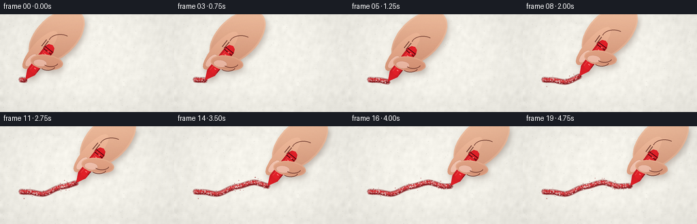
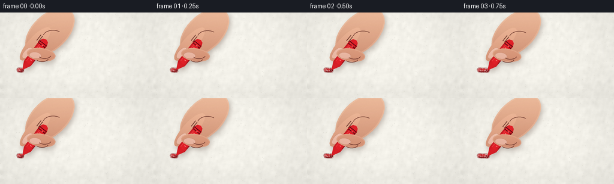

CODING AGENTS AS PIXEL WORLD MODELS
traex/GPT-5.6-Sol · phygen_033
点击播放 · 原生 RGB 像素
逐轮保存的候选
回放视频、检查图与代码变化。
每份候选均可单独播放。实际图片检查记录在下方工具轨迹中。
候选 01播放与检查图
点击播放 · 原生 RGB 像素


展开代码变化
--- 上一保存版本
+++ 本次保存版本
@@ -0,0 +1,248 @@
+from pathlib import Path
+import math
+import numpy as np
+import cv2
+from PIL import Image, ImageDraw, ImageFilter
+import artifact_io
+
+# Deterministic procedural macro shot: a hand moves a short wax crayon over rough paper.
+W, H, N, S = 256, 144, 20, 3
+SW, SH = W*S, H*S
+rng = np.random.default_rng(33017)
+
+# A fixed, tactile paper plate. Noise is deliberately fixed so the paper itself
+# does not shimmer from frame to frame.
+yy, xx = np.mgrid[0:SH, 0:SW]
+base = np.empty((SH, SW, 3), np.float32)
+light = 1.8*(xx/SW) - 3.3*(yy/SH) + 3.0*np.exp(-(((xx/SW)-.37)**2 + ((yy/SH)-.38)**2)/.28)
+base_col = np.array([244., 242., 234.])
+base[:] = base_col + light[...,None]
+low = cv2.GaussianBlur(rng.normal(0,1,(SH,SW)).astype(np.float32),(0,0),7.0)
+low /= max(low.std(), .01)
+hi = rng.normal(0,1,(SH,SW)).astype(np.float32)
+base += (low*2.15 + hi*.72)[...,None]
+# Fine directional tooth in the paper.
+base += (0.65*np.sin(xx*.32 + yy*.07) + .35*np.sin(yy*.73))[...,None]
+base = np.clip(base,0,255).astype(np.uint8)
+paper = Image.fromarray(base, 'RGB')
+pd = ImageDraw.Draw(paper, 'RGBA')
+for _ in range(1050):
+ x = int(rng.integers(0,SW)); y = int(rng.integers(0,SH))
+ l = int(rng.integers(1,10)); ang = rng.normal(0,.25)
+ c = (112,108,96,int(rng.integers(7,18))) if rng.random()<.58 else (255,255,252,int(rng.integers(10,25)))
+ pd.line((x,y,x+l*math.cos(ang),y+l*math.sin(ang)),fill=c,width=1)
+for _ in range(340):
+ x=int(rng.integers(0,SW)); y=int(rng.integers(0,SH)); r=int(rng.integers(1,3))
+ pd.ellipse((x-r,y-r,x+r,y+r),fill=(105,100,88,int(rng.integers(8,20))))
+paper_arr = np.asarray(paper).copy()
+
+# The hand-drawn curve in paper coordinates.
+def path_y(x):
+ return 97.0 - .105*(x-32.0) + 4.8*math.sin((x-37.0)/15.5) + 1.05*math.sin((x-20)/5.7)
+
+def polyline_mask(points, width):
+ m=np.zeros((SH,SW),np.uint8)
+ pts=np.round(np.asarray(points)*S).astype(np.int32)
+ if len(pts)>=2: cv2.polylines(m,[pts],False,255,int(width*S),cv2.LINE_AA)
+ elif len(pts)==1: cv2.circle(m,tuple(pts[0]),max(1,int(width*S/2)),255,-1,cv2.LINE_AA)
+ return m
+
+def blend_color(arr, mask, color, opacity=1.0, texture=None):
+ a=mask.astype(np.float32)/255.0*opacity
+ if texture is not None: a *= texture
+ a=np.clip(a,0,1)[...,None]
+ arr[:] = np.clip(arr*(1-a)+np.array(color,np.float32)*a,0,255).astype(np.uint8)
+
+def shape_mask(draw_fn):
+ im=Image.new('L',(SW,SH),0); d=ImageDraw.Draw(im)
+ draw_fn(d)
+ return np.asarray(im)
+
+def add_mask_gradient(arr, mask, top, bottom, noise_amp=0.0, axis='y'):
+ if axis=='y': t=np.linspace(0,1,SH,dtype=np.float32)[:,None]
+ else: t=np.linspace(0,1,SW,dtype=np.float32)[None,:]
+ col=np.zeros((SH,SW,3),np.float32)
+ for k in range(3): col[...,k]=top[k]*(1-t)+bottom[k]*t
+ if noise_amp:
+ tex=cv2.GaussianBlur(rng.normal(0,1,(SH,SW)).astype(np.float32),(0,0),1.5)
+ col += tex[...,None]*noise_amp
+ a=(mask.astype(np.float32)/255.)[...,None]
+ arr[:] = np.clip(arr*(1-a)+col*a,0,255).astype(np.uint8)
+
+def ellipse_poly(center, axes, angle_deg, count=80):
+ a=math.radians(angle_deg); ca,sa=math.cos(a),math.sin(a)
+ out=[]
+ for q in np.linspace(0,2*math.pi,count,endpoint=False):
+ X=axes[0]*.5*math.cos(q); Y=axes[1]*.5*math.sin(q)
+ out.append(((center[0]+X*ca-Y*sa)*S,(center[1]+X*sa+Y*ca)*S))
+ return out
+
+def polygon_mask(points):
+ return shape_mask(lambda d: d.polygon([(int(x*S),int(y*S)) for x,y in points],fill=255))
+
+def ellipse_mask(center,axes,angle):
+ poly=ellipse_poly(center,axes,angle)
+ return shape_mask(lambda d:d.polygon([(int(x),int(y)) for x,y in poly],fill=255))
+
+def shadow_composite(arr, masks, blur=5.0, offset=(2,4), alpha=0.28):
+ total=np.maximum.reduce(masks) if len(masks)>1 else masks[0]
+ M=np.float32([[1,0,offset[0]*S],[0,1,offset[1]*S]])
+ sh=cv2.warpAffine(total,M,(SW,SH),borderValue=0)
+ sh=cv2.GaussianBlur(sh,(0,0),blur*S)
+ blend_color(arr,sh,(72,48,39),alpha)
+
+def draw_rough_wax(arr, current_x):
+ # Dense centreline up to the current contact point.
+ xs=np.arange(31.0,current_x+.001,.48)
+ points=[(x,path_y(x)) for x in xs]
+ if len(points)<2: return
+ # broad embedded wax stain then the more opaque pressure ridge
+ m8=polyline_mask(points,8.0)
+ m6=polyline_mask([(x,y-.15*math.sin(x*.71)) for x,y in points],5.6)
+ m3=polyline_mask([(x,y-1.0+.25*math.sin(x*.9)) for x,y in points],2.25)
+ fixed=np.random.default_rng(781)
+ gran=fixed.random((SH,SW)).astype(np.float32)
+ tooth=cv2.GaussianBlur(gran,(0,0),.45)
+ coverage=np.clip(.64 + .52*tooth,0,1)
+ # Tiny missing flecks let the white tooth of the sheet show through.
+ holes=np.ones((SH,SW),np.float32)
+ for _ in range(250):
+ hx=int(fixed.integers(25*S,165*S)); hy=int((path_y(hx/S)+fixed.normal(0,2.2))*S)
+ rr=int(fixed.integers(1,4)); cv2.circle(holes,(hx,hy),rr,float(fixed.uniform(.08,.55)),-1)
+ blend_color(arr,m8,(127,18,22),.52,coverage*holes)
+ blend_color(arr,m6,(196,24,31),.84,coverage*holes)
+ blend_color(arr,m3,(236,49,53),.58,coverage*holes)
+ # pressure-darkened lower edge
+ lower=[(x,y+2.45+.18*math.sin(x*.4)) for x,y in points]
+ blend_color(arr,polyline_mask(lower,1.05),(100,13,18),.62,holes)
+ # fixed loose wax crumbs, revealed only once the tip has passed them
+ d=ImageDraw.Draw(Image.fromarray(arr), 'RGBA')
+
+def render(frame_idx):
+ arr=paper_arr.copy()
+ # slight easing makes acceleration and continued active drawing readable.
+ u=frame_idx/(N-1)
+ ease=u*u*(3-2*u)
+ cx=37.0 + 121.0*ease
+ cy=path_y(cx)
+ draw_rough_wax(arr,cx)
+
+ # Scatter wax crumbs behind the moving tip; positions remain attached to paper.
+ crumbs=Image.new('RGBA',(SW,SH),(0,0,0,0)); cd=ImageDraw.Draw(crumbs,'RGBA')
+ crng=np.random.default_rng(912)
+ for _ in range(115):
+ x=float(crng.uniform(34,158))
+ if x>cx-3: continue
+ y=path_y(x)+float(crng.normal(0,3.3))
+ if crng.random() < .62:
+ r=float(crng.uniform(.22,.72))*S
+ cd.ellipse((x*S-r,y*S-r,x*S+r,y*S+r),fill=(151,18,24,int(crng.integers(75,180))))
+ arr=np.asarray(Image.alpha_composite(Image.fromarray(arr).convert('RGBA'),crumbs).convert('RGB')).copy()
+
+ # Crayon axis (contact -> blunt rear), with tiny natural rocking.
+ ang=math.radians(-52 + 1.5*math.sin(frame_idx*.61))
+ v=np.array([math.cos(ang),math.sin(ang)])
+ n=np.array([-v[1],v[0]])
+ p=np.array([cx,cy])
+ # Hand masses, all translated rigidly with the crayon.
+ palm_c=p+v*79-n*3
+ rear=p+v*57
+ palm=ellipse_mask(palm_c,(99,59),-44)
+ index_c=p+v*48-n*10
+ index=ellipse_mask(index_c,(72,23),-48)
+ thumb_c=p+v*40+n*9
+ thumb=ellipse_mask(thumb_c,(48,22),8)
+ # Short wax stick silhouette.
+ body_pts=[p,
+ p+v*14-n*7.1,p+v*57-n*7.7,
+ p+v*63-n*5.0,p+v*65,
+ p+v*63+n*5.0,p+v*57+n*7.7,p+v*14+n*7.1]
+ body=polygon_mask(body_pts)
+ shadow_composite(arr,[palm,index,thumb,body],blur=4.2,offset=(2.2,4.0),alpha=.30)
+
+ # Palm and rear index finger behind the crayon.
+ add_mask_gradient(arr,palm,(242,190,158),(174,103,79),2.2)
+ # soft warm lit rim on palm
+ rim=cv2.erode(palm,np.ones((11,11),np.uint8)); rim=np.clip(palm-rim,0,255)
+ blend_color(arr,rim,(255,223,196),.24)
+ add_mask_gradient(arr,index,(250,199,167),(188,112,85),1.7)
+ # Index nail, near the gripping end.
+ nail_c=index_c-v*20-n*1
+ nail=ellipse_mask(nail_c,(22,10),-48)
+ add_mask_gradient(arr,nail,(255,222,203),(219,153,132),.7)
+ nailrim=cv2.dilate(nail,np.ones((3,3),np.uint8))-nail
+ blend_color(arr,nailrim,(131,76,63),.22)
+
+ # Creases and soft knuckle accents behind stick.
+ overlay=Image.fromarray(arr).convert('RGBA'); od=ImageDraw.Draw(overlay,'RGBA')
+ for off in [-1.7,1.8]:
+ q=index_c+v*13+n*off
+ a=q-v*7; b=q+v*5
+ od.line((a[0]*S,a[1]*S,b[0]*S,b[1]*S),fill=(111,60,49,58),width=1*S)
+ # palm folds
+ q=p+v*76+n*6
+ od.arc((int((q[0]-17)*S),int((q[1]-11)*S),int((q[0]+17)*S),int((q[1]+11)*S)),195,310,fill=(119,66,53,48),width=1*S)
+ arr=np.asarray(overlay.convert('RGB')).copy()
+
+ # Wax stick: cylinder shading is based on signed distance across its axis.
+ proj=((xx/S-p[0])*n[0]+(yy/S-p[1])*n[1])
+ q=np.clip(proj/8.,-1,1)
+ shade=0.52+0.48*np.sqrt(np.maximum(0,1-q*q))
+ crcol=np.empty((SH,SW,3),np.float32)
+ crcol[...,0]=112+116*shade; crcol[...,1]=8+25*shade; crcol[...,2]=14+27*shade
+ crcol += cv2.GaussianBlur(rng.normal(0,1,(SH,SW)).astype(np.float32),(0,0),.7)[...,None]*2.3
+ a=(body.astype(np.float32)/255.)[...,None]
+ arr=np.clip(arr*(1-a)+crcol*a,0,255).astype(np.uint8)
+ # Cone separation and waxy highlight.
+ cone=[p,p+v*15-n*7.0,p+v*15+n*7.0]
+ cm=polygon_mask(cone)
+ blend_color(arr,cm,(188,24,31),.19)
+ ridge_pts=[tuple(p+v*t-n*4.1) for t in np.linspace(17,58,20)]
+ blend_color(arr,polyline_mask(ridge_pts,.9),(255,101,96),.46)
+ seam_pts=[tuple(p+v*t+n*6.3) for t in np.linspace(20,56,18)]
+ blend_color(arr,polyline_mask(seam_pts,.75),(91,8,15),.54)
+ # Ring and scuffs make it unmistakably a broken crayon piece.
+ over=Image.fromarray(arr).convert('RGBA'); od=ImageDraw.Draw(over,'RGBA')
+ for t,alpha in [(53,90),(57,75)]:
+ a1=p+v*t-n*7; a2=p+v*t+n*7
+ od.line((a1[0]*S,a1[1]*S,a2[0]*S,a2[1]*S),fill=(75,5,12,alpha),width=1*S)
+ for k in range(7):
+ t=22+k*5.2; qq=p+v*t+n*(2.0*math.sin(k*2.1))
+ od.line((qq[0]*S,qq[1]*S,(qq[0]+n[0]*2.5)*S,(qq[1]+n[1]*2.5)*S),fill=(255,132,128,70),width=1*S)
+ arr=np.asarray(over.convert('RGB')).copy()
+
+ # Thumb in front of the stick, with nail and contact creases.
+ add_mask_gradient(arr,thumb,(249,195,162),(181,104,79),1.5)
+ tr=cv2.erode(thumb,np.ones((9,9),np.uint8)); edge=np.clip(thumb-tr,0,255)
+ blend_color(arr,edge,(255,218,187),.18)
+ tn_c=thumb_c-n*7-v*7
+ tn=ellipse_mask(tn_c,(19,10),7)
+ add_mask_gradient(arr,tn,(255,221,202),(213,145,124),.5)
+ tnr=cv2.dilate(tn,np.ones((3,3),np.uint8))-tn
+ blend_color(arr,tnr,(130,72,61),.18)
+ over=Image.fromarray(arr).convert('RGBA'); od=ImageDraw.Draw(over,'RGBA')
+ for dt in [-4,3]:
+ q=thumb_c+v*dt+n*5
+ od.arc(((q[0]-11)*S,(q[1]-6)*S,(q[0]+11)*S,(q[1]+6)*S),15,145,fill=(112,58,48,55),width=1*S)
+ arr=np.asarray(over.convert('RGB')).copy()
+
+ # Contact pressure: dark compressed wax, tiny freshly sheared flakes and a pin highlight.
+ contact=Image.new('RGBA',(SW,SH),(0,0,0,0)); d=ImageDraw.Draw(contact,'RGBA')
+ d.ellipse(((cx-2.5)*S,(cy-1.2)*S,(cx+2.6)*S,(cy+2.0)*S),fill=(83,8,14,155))
+ rrng=np.random.default_rng(2100+frame_idx)
+ for _ in range(8):
+ fx=cx+rrng.uniform(-3.2,1.3); fy=cy+rrng.uniform(-2.2,2.8); r=rrng.uniform(.18,.58)*S
+ d.ellipse((fx*S-r,fy*S-r,fx*S+r,fy*S+r),fill=(179,20,29,int(rrng.integers(100,210))))
+ d.ellipse(((cx-.7)*S,(cy-.8)*S,(cx+.25)*S,(cy+.1)*S),fill=(255,137,132,185))
+ arr=np.asarray(Image.alpha_composite(Image.fromarray(arr).convert('RGBA'),contact).convert('RGB')).copy()
+
+ # Mild optical softness at macro scale, then downsample for clean antialiasing.
+ im=Image.fromarray(arr).resize((W,H),Image.Resampling.LANCZOS)
+ out=np.asarray(im).copy()
+ # Gentle vignette; keeps attention on wax-paper contact.
+ Y,X=np.mgrid[0:H,0:W]; vig=np.clip(((X-W*.48)/(W*.72))**2+((Y-H*.50)/(H*.82))**2,0,1)
+ out=np.clip(out.astype(np.float32)*(1-.075*vig[...,None]),0,255).astype(np.uint8)
+ return out
+
+frames=np.stack([render(i) for i in range(N)],axis=0).astype(np.uint8)
+artifact_io.save(frames,Path(__file__).resolve().parent)
可观测工具轨迹
实际执行的命令与返回图片。
命令 1exit 0
/bin/bash -lc "cat prompt.txt && printf '\\n--- GENERATION_RULES ---\\n' && cat GENERATION_RULES.md"
命令 2exit 0
/bin/bash -lc "cat task_spec.json && printf '\\n--- files ---\\n' && find . -maxdepth 2 -type f -printf '%p %s bytes\\n' | sort"
命令 3exit 0
/bin/bash -lc "command -v ffmpeg; command -v python3; python3 - <<'PY' mods=['PIL','numpy','cv2','cairo','moviepy','scipy'] for m in mods: try: x=__import__(m); print(m,'OK',getattr(x,'__version__','')) except Exception as e: print(m,'NO',e) PY"
命令 4exit 0
/bin/bash -lc 'cat artifact_io.py'
命令 5exit 0
/bin/bash -lc "cat > generate.py <<'PY'
from pathlib import Path
import math
import numpy as np
import cv2
from PIL import Image, ImageDraw, ImageFilter
import artifact_io
# Deterministic procedural macro shot: a hand moves a short wax crayon over rough paper.
W, H, N, S = 256, 144, 20, 3
SW, SH = W*S, H*S
rng = np.random.default_rng(33017)
# A fixed, tactile paper plate. Noise is deliberately fixed so the paper itself
# does not shimmer from frame to frame.
yy, xx = np.mgrid[0:SH, 0:SW]
base = np.empty((SH, SW, 3), np.float32)
light = 1.8*(xx/SW) - 3.3*(yy/SH) + 3.0*np.exp(-(((xx/SW)-.37)**2 + ((yy/SH)-.38)**2)/.28)
base_col = np.array([244., 242., 234.])
base[:] = base_col + light[...,None]
low = cv2.GaussianBlur(rng.normal(0,1,(SH,SW)).astype(np.float32),(0,0),7.0)
low /= max(low.std(), .01)
hi = rng.normal(0,1,(SH,SW)).astype(np.float32)
base += (low*2.15 + hi*.72)[...,None]
# Fine directional tooth in the paper.
base += (0.65*np.sin(xx*.32 + yy*.07) + .35*np.sin(yy*.73))[...,None]
base = np.clip(base,0,255).astype(np.uint8)
paper = Image.fromarray(base, 'RGB')
pd = ImageDraw.Draw(paper, 'RGBA')
for _ in range(1050):
x = int(rng.integers(0,SW)); y = int(rng.integers(0,SH))
l = int(rng.integers(1,10)); ang = rng.normal(0,.25)
c = (112,108,96,int(rng.integers(7,18))) if rng.random()<.58 else (255,255,252,int(rng.integers(10,25)))
pd.line((x,y,x+l*math.cos(ang),y+l*math.sin(ang)),fill=c,width=1)
for _ in range(340):
x=int(rng.integers(0,SW)); y=int(rng.integers(0,SH)); r=int(rng.integers(1,3))
pd.ellipse((x-r,y-r,x+r,y+r),fill=(105,100,88,int(rng.integers(8,20))))
paper_arr = np.asarray(paper).copy()
# The hand-drawn curve in paper coordinates.
def path_y(x):
return 97.0 - .105*(x-32.0) + 4.8*math.sin((x-37.0)/15.5) + 1.05*math.sin((x-20)/5.7)
def polyline_mask(points, width):
m=np.zeros((SH,SW),np.uint8)
pts=np.round(np.asarray(points)*S).astype(np.int32)
if len(pts)>=2: cv2.polylines(m,[pts],False,255,int(width*S),cv2.LINE_AA)
elif len(pts)==1: cv2.circle(m,tuple(pts[0]),max(1,int(width*S/2)),255,-1,cv2.LINE_AA)
return m
def blend_color(arr, mask, color, opacity=1.0, texture=None):
a=mask.astype(np.float32)/255.0*opacity
if texture is not None: a *= texture
a=np.clip(a,0,1)[...,None]
arr[:] = np.clip(arr*(1-a)+np.array(color,np.float32)*a,0,255).astype(np.uint8)
def shape_mask(draw_fn):
im=Image.new('L',(SW,SH),0); d=ImageDraw.Draw(im)
draw_fn(d)
return np.asarray(im)
def add_mask_gradient(arr, mask, top, bottom, noise_amp=0.0, axis='y'):
if axis=='y': t=np.linspace(0,1,SH,dtype=np.float32)[:,None]
else: t=np.linspace(0,1,SW,dtype=np.float32)[None,:]
col=np.zeros((SH,SW,3),np.float32)
for k in range(3): col[...,k]=top[k]*(1-t)+bottom[k]*t
if noise_amp:
tex=cv2.GaussianBlur(rng.normal(0,1,(SH,SW)).astype(np.float32),(0,0),1.5)
col += tex[...,None]*noise_amp
a=(mask.astype(np.float32)/255.)[...,None]
arr[:] = np.clip(arr*(1-a)+col*a,0,255).astype(np.uint8)
def ellipse_poly(center, axes, angle_deg, count=80):
a=math.radians(angle_deg); ca,sa=math.cos(a),math.sin(a)
out=[]
for q in np.linspace(0,2*math.pi,count,endpoint=False):
X=axes[0]*.5*math.cos(q); Y=axes[1]*.5*math.sin(q)
out.append(((center[0]+X*ca-Y*sa)*S,(center[1]+X*sa+Y*ca)*S))
return out
def polygon_mask(points):
return shape_mask(lambda d: d.polygon([(int(x*S),int(y*S)) for x,y in points],fill=255))
def ellipse_mask(center,axes,angle):
poly=ellipse_poly(center,axes,angle)
return shape_mask(lambda d:d.polygon([(int(x),int(y)) for x,y in poly],fill=255))
def shadow_composite(arr, masks, blur=5.0, offset=(2,4), alpha=0.28):
total=np.maximum.reduce(masks) if len(masks)>1 else masks[0]
M=np.float32([[1,0,offset[0]*S],[0,1,offset[1]*S]])
sh=cv2.warpAffine(total,M,(SW,SH),borderValue=0)
sh=cv2.GaussianBlur(sh,(0,0),blur*S)
blend_color(arr,sh,(72,48,39),alpha)
def draw_rough_wax(arr, current_x):
# Dense centreline up to the current contact point.
xs=np.arange(31.0,current_x+.001,.48)
points=[(x,path_y(x)) for x in xs]
if len(points)<2: return
# broad embedded wax stain then the more opaque pressure ridge
m8=polyline_mask(points,8.0)
m6=polyline_mask([(x,y-.15*math.sin(x*.71)) for x,y in points],5.6)
m3=polyline_mask([(x,y-1.0+.25*math.sin(x*.9)) for x,y in points],2.25)
fixed=np.random.default_rng(781)
gran=fixed.random((SH,SW)).astype(np.float32)
tooth=cv2.GaussianBlur(gran,(0,0),.45)
coverage=np.clip(.64 + .52*tooth,0,1)
# Tiny missing flecks let the white tooth of the sheet show through.
holes=np.ones((SH,SW),np.float32)
for _ in range(250):
hx=int(fixed.integers(25*S,165*S)); hy=int((path_y(hx/S)+fixed.normal(0,2.2))*S)
rr=int(fixed.integers(1,4)); cv2.circle(holes,(hx,hy),rr,float(fixed.uniform(.08,.55)),-1)
blend_color(arr,m8,(127,18,22),.52,coverage*holes)
blend_color(arr,m6,(196,24,31),.84,coverage*holes)
blend_color(arr,m3,(236,49,53),.58,coverage*holes)
# pressure-darkened lower edge
lower=[(x,y+2.45+.18*math.sin(x*.4)) for x,y in points]
blend_color(arr,polyline_mask(lower,1.05),(100,13,18),.62,holes)
# fixed loose wax crumbs, revealed only once the tip has passed them
d=ImageDraw.Draw(Image.fromarray(arr), 'RGBA')
def render(frame_idx):
arr=paper_arr.copy()
# slight easing makes acceleration and continued active drawing readable.
u=frame_idx/(N-1)
ease=u*u*(3-2*u)
cx=37.0 + 121.0*ease
cy=path_y(cx)
draw_rough_wax(arr,cx)
# Scatter wax crumbs behind the moving tip; positions remain attached to paper.
crumbs=Image.new('RGBA',(SW,SH),(0,0,0,0)); cd=ImageDraw.Draw(crumbs,'RGBA')
crng=np.random.default_rng(912)
for _ in range(115):
x=float(crng.uniform(34,158))
if x>cx-3: continue
y=path_y(x)+float(crng.normal(0,3.3))
if crng.random() < .62:
r=float(crng.uniform(.22,.72))*S
cd.ellipse((x*S-r,y*S-r,x*S+r,y*S+r),fill=(151,18,24,int(crng.integers(75,180))))
arr=np.asarray(Image.alpha_composite(Image.fromarray(arr).convert('RGBA'),crumbs).convert('RGB')).copy()
# Crayon axis (contact -> blunt rear), with tiny natural rocking.
ang=math.radians(-52 + 1.5*math.sin(frame_idx*.61))
v=np.array([math.cos(ang),math.sin(ang)])
n=np.array([-v[1],v[0]])
p=np.array([cx,cy])
# Hand masses, all translated rigidly with the crayon.
palm_c=p+v*79-n*3
rear=p+v*57
palm=ellipse_mask(palm_c,(99,59),-44)
index_c=p+v*48-n*10
index=ellipse_mask(index_c,(72,23),-48)
thumb_c=p+v*40+n*9
thumb=ellipse_mask(thumb_c,(48,22),8)
# Short wax stick silhouette.
body_pts=[p,
p+v*14-n*7.1,p+v*57-n*7.7,
p+v*63-n*5.0,p+v*65,
p+v*63+n*5.0,p+v*57+n*7.7,p+v*14+n*7.1]
body=polygon_mask(body_pts)
shadow_composite(arr,[palm,index,thumb,body],blur=4.2,offset=(2.2,4.0),alpha=.30)
# Palm and rear index finger behind the crayon.
add_mask_gradient(arr,palm,(242,190,158),(174,103,79),2.2)
# soft warm lit rim on palm
rim=cv2.erode(palm,np.ones((11,11),np.uint8)); rim=np.clip(palm-rim,0,255)
blend_color(arr,rim,(255,223,196),.24)
add_mask_gradient(arr,index,(250,199,167),(188,112,85),1.7)
# Index nail, near the gripping end.
nail_c=index_c-v*20-n*1
nail=ellipse_mask(nail_c,(22,10),-48)
add_mask_gradient(arr,nail,(255,222,203),(219,153,132),.7)
nailrim=cv2.dilate(nail,np.ones((3,3),np.uint8))-nail
blend_color(arr,nailrim,(131,76,63),.22)
# Creases and soft knuckle accents behind stick.
overlay=Image.fromarray(arr).convert('RGBA'); od=ImageDraw.Draw(overlay,'RGBA')
for off in [-1.7,1.8]:
q=index_c+v*13+n*off
a=q-v*7; b=q+v*5
od.line((a[0]*S,a[1]*S,b[0]*S,b[1]*S),fill=(111,60,49,58),width=1*S)
# palm folds
q=p+v*76+n*6
od.arc((int((q[0]-17)*S),int((q[1]-11)*S),int((q[0]+17)*S),int((q[1]+11)*S)),195,310,fill=(119,66,53,48),width=1*S)
arr=np.asarray(overlay.convert('RGB')).copy()
# Wax stick: cylinder shading is based on signed distance across its axis.
proj=((xx/S-p[0])*n[0]+(yy/S-p[1])*n[1])
q=np.clip(proj/8.,-1,1)
shade=0.52+0.48*np.sqrt(np.maximum(0,1-q*q))
crcol=np.empty((SH,SW,3),np.float32)
crcol[...,0]=112+116*shade; crcol[...,1]=8+25*shade; crcol[...,2]=14+27*shade
crcol += cv2.GaussianBlur(rng.normal(0,1,(SH,SW)).astype(np.float32),(0,0),.7)[...,None]*2.3
a=(body.astype(np.float32)/255.)[...,None]
arr=np.clip(arr*(1-a)+crcol*a,0,255).astype(np.uint8)
# Cone separation and waxy highlight.
cone=[p,p+v*15-n*7.0,p+v*15+n*7.0]
cm=polygon_mask(cone)
blend_color(arr,cm,(188,24,31),.19)
ridge_pts=[tuple(p+v*t-n*4.1) for t in np.linspace(17,58,20)]
blend_color(arr,polyline_mask(ridge_pts,.9),(255,101,96),.46)
seam_pts=[tuple(p+v*t+n*6.3) for t in np.linspace(20,56,18)]
blend_color(arr,polyline_mask(seam_pts,.75),(91,8,15),.54)
# Ring and scuffs make it unmistakably a broken crayon piece.
over=Image.fromarray(arr).convert('RGBA'); od=ImageDraw.Draw(over,'RGBA')
for t,alpha in [(53,90),(57,75)]:
a1=p+v*t-n*7; a2=p+v*t+n*7
od.line((a1[0]*S,a1[1]*S,a2[0]*S,a2[1]*S),fill=(75,5,12,alpha),width=1*S)
for k in range(7):
t=22+k*5.2; qq=p+v*t+n*(2.0*math.sin(k*2.1))
od.line((qq[0]*S,qq[1]*S,(qq[0]+n[0]*2.5)*S,(qq[1]+n[1]*2.5)*S),fill=(255,132,128,70),width=1*S)
arr=np.asarray(over.convert('RGB')).copy()
# Thumb in front of the stick, with nail and contact creases.
add_mask_gradient(arr,thumb,(249,195,162),(181,104,79),1.5)
tr=cv2.erode(thumb,np.ones((9,9),np.uint8)); edge=np.clip(thumb-tr,0,255)
blend_color(arr,edge,(255,218,187),.18)
tn_c=thumb_c-n*7-v*7
tn=ellipse_mask(tn_c,(19,10),7)
add_mask_gradient(arr,tn,(255,221,202),(213,145,124),.5)
tnr=cv2.dilate(tn,np.ones((3,3),np.uint8))-tn
blend_color(arr,tnr,(130,72,61),.18)
over=Image.fromarray(arr).convert('RGBA'); od=ImageDraw.Draw(over,'RGBA')
for dt in [-4,3]:
q=thumb_c+v*dt+n*5
od.arc(((q[0]-11)*S,(q[1]-6)*S,(q[0]+11)*S,(q[1]+6)*S),15,145,fill=(112,58,48,55),width=1*S)
arr=np.asarray(over.convert('RGB')).copy()
# Contact pressure: dark compressed wax, tiny freshly sheared flakes and a pin highlight.
contact=Image.new('RGBA',(SW,SH),(0,0,0,0)); d=ImageDraw.Draw(contact,'RGBA')
d.ellipse(((cx-2.5)*S,(cy-1.2)*S,(cx+2.6)*S,(cy+2.0)*S),fill=(83,8,14,155))
rrng=np.random.default_rng(2100+frame_idx)
for _ in range(8):
fx=cx+rrng.uniform(-3.2,1.3); fy=cy+rrng.uniform(-2.2,2.8); r=rrng.uniform(.18,.58)*S
d.ellipse((fx*S-r,fy*S-r,fx*S+r,fy*S+r),fill=(179,20,29,int(rrng.integers(100,210))))
d.ellipse(((cx-.7)*S,(cy-.8)*S,(cx+.25)*S,(cy+.1)*S),fill=(255,137,132,185))
arr=np.asarray(Image.alpha_composite(Image.fromarray(arr).convert('RGBA'),contact).convert('RGB')).copy()
# Mild optical softness at macro scale, then downsample for clean antialiasing.
im=Image.fromarray(arr).resize((W,H),Image.Resampling.LANCZOS)
out=np.asarray(im).copy()
# Gentle vignette; keeps attention on wax-paper contact.
Y,X=np.mgrid[0:H,0:W]; vig=np.clip(((X-W*.48)/(W*.72))**2+((Y-H*.50)/(H*.82))**2,0,1)
out=np.clip(out.astype(np.float32)*(1-.075*vig[...,None]),0,255).astype(np.uint8)
return out
frames=np.stack([render(i) for i in range(N)],axis=0).astype(np.uint8)
artifact_io.save(frames,Path(__file__).resolve().parent)
PY
python3 generate.py
python3 - <<'PY'
from PIL import Image
import numpy as np
x=np.load('pixels.npz')['pixels']
print(x.shape,x.dtype,hex(int(x[0,0,0])))
PY"命令 6exit 0
/bin/bash -lc "python3 - <<'PY'
import numpy as np, hashlib
p=np.load('pixels.npz')['pixels']
# unpack saved (H,W,N)
f=np.stack([np.stack([(p[:,:,i]>>16)&255,(p[:,:,i]>>8)&255,p[:,:,i]&255],-1) for i in range(p.shape[2])])
print('frames', f.shape, 'range',f.min(),f.max())
print('mean RGB',f.mean((0,1,2)).round(2))
for i in range(1,20):
d=np.abs(f[i].astype(int)-f[i-1].astype(int))
print(i, 'changed',np.mean(np.any(d>2,2)).round(3),'MAE',d.mean().round(2))
print('artifact',hashlib.sha256(open('pixels.npz','rb').read()).hexdigest())
PY
ls -lh generate.py pixels.npz inspection.png index.html frames/00.png frames/19.png"保存候选 1 份；完成命令 6 次；可验证图片返回 0 张。原始 API 响应与完整日志保留在本地。